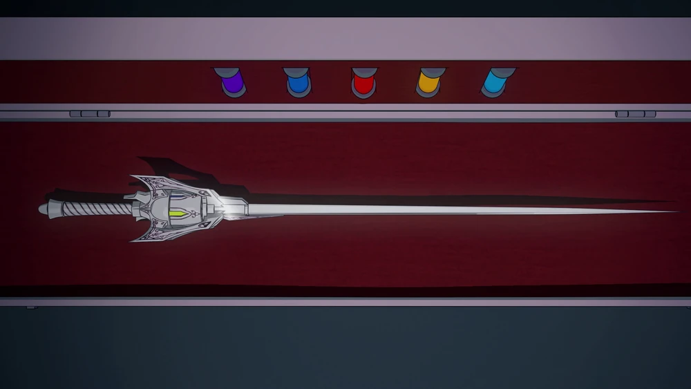
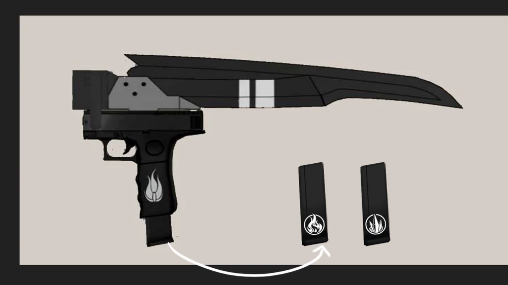
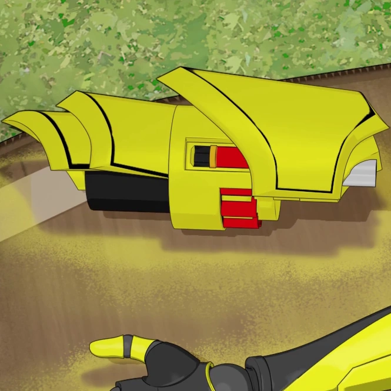

Weapons

Crescent Rose |
Crescent Rose is Ruby Rose's signature weapon. It is a High-Caliber Sniper-Scythe (HCSS) - a hybrid between a scythe, a bolt-action sniper rifle, and a war scythe. Ruby is first seen wielding it in the "Red" Trailer. |

Myrtenaster |
Myrtenaster is standard-sized for a rapier and primarily silver-gray in color. The hilt possesses four prongs that encase the revolver-like chamber around the ricasso instead of a bow type hand-guard that is common among most rapiers, in a manner somewhat alike to a swept hilt. This mechanism can be controlled by the sword-hand, enabling her to seamlessly cycle the chamber in combat. When Weiss carries the weapon on her hip it is sometimes seen with only two prongs as the other two fold away for easier storage. |

Gambol Shroud |
The essence of two weapon components is that they fit together as one, but come apart to be two, so that they are compact for easier carrying. When in sheathed form, Gambol Shroud was held by the hilt, but when two components separate, the sheath was held by a small rectangular hole near the top. The sword also had a compact, striker-fired pistol built into its hilt. |

Ember Celica |
Ember Celica appear to be a pair of bracelets at first, but when activated, they cover Yang's hands and extend into Bracers, acting as arm guards, They have a golden-yellow color and the shells inside are red and orange. |
This Website is for Informational Purpose Only!